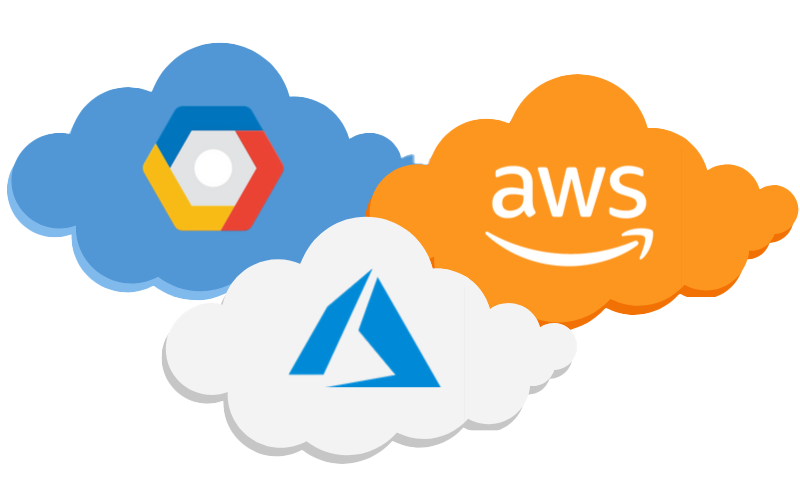
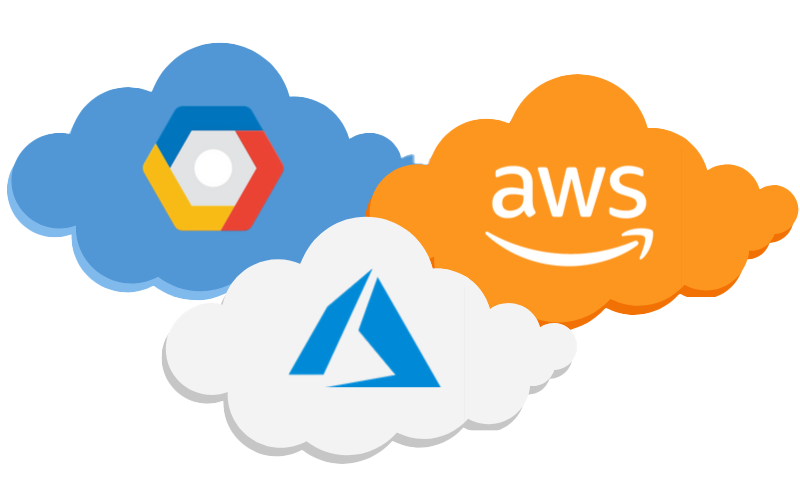
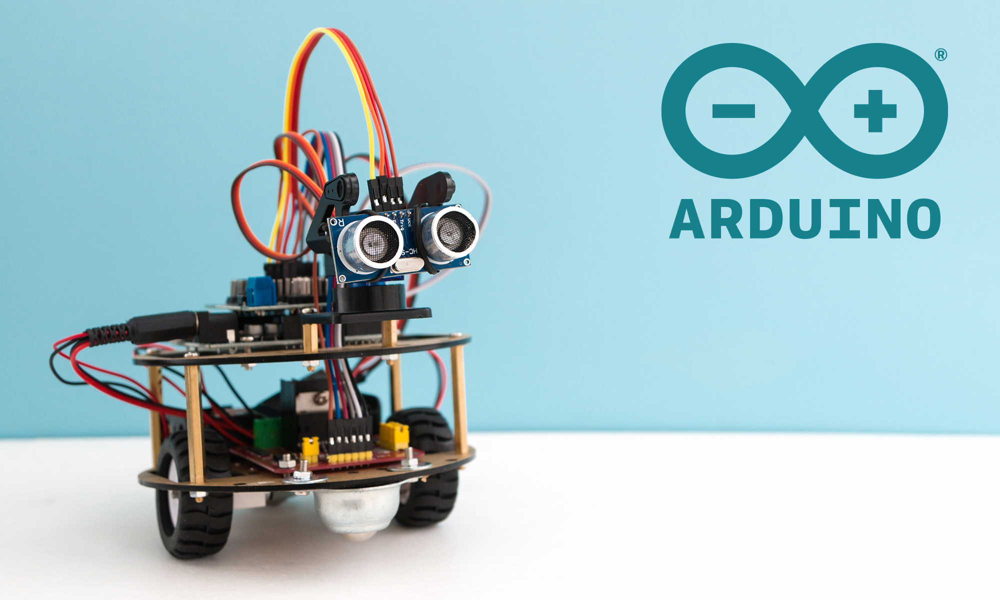
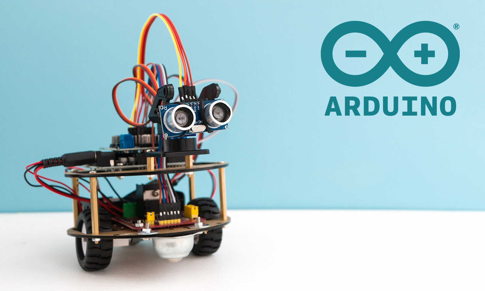

back to Cinema
IT Technologies
Clouds, services, servers
 

What does it do?
A cloud server is used to store information in a network instead of a computer's hard drive. It is widespread for devices to use cloud servers, for instance; apple's iCloud. In addition, clouds have their software powerful enough to run their units. This can be presented in the form of web-hosting, data hosting, and sharing. The hardware store will not be affected by using a cloud, allowing users to store more information, e.g., photos, lecture slides, and photoshop. This is attractive for businesses because it provides security and stability. After all, any software issues are isolated from your environment. Furthermore, unlike physical servers, cloud servers are fast, stable, and secure with no extra cost.
What is the state of the art of this new technology?
Cloud computing is one of the biggest and fastest-growing technologies. With tech specialists eager to create breakthroughs in this field. In 2019 Google announced that they are currently working on a quantum breakthrough that will drastically improve cloud computing. This is believed to Impact many areas of tech, such as artificial intelligence. This quantum machine will be able to execute mathematical equations in less than 3 minutes. In addition, a cloud gaming service was launched by google called Stadia; this gaming service allowed users to stream and play games on the go. This is a vast advancement as gamers will not require specialized gaming hardware, minimizing the cost for gamers.
What can be done now?
In current times, businesses and organizations are working towards adopting cloud computing into in-house processing. Due to this, a broad range of industries is maximizing the use of cloud-based products and services. Cloud computing can now be used in; healthcare, education, eCommerce, marketing, and emails. For example, hospitals can keep records on a cloud server; students can access information via the cloud and submit work with minor risks, and users can download more software on their harddrive as a cloud server can store information.
What is likely to be able to do be done soon (say in the next three years)?
There will be exponential growth in cloud computing. 75% of all data operations will be carried out outside a typical data center, 40% of organizations will be using cloud technology, a quarter of end-point devices will successfully execute AI by 2022. It is believed that by the end of 2022, we will see the use of multi-cloud offerings. The main goal of cloud technology is to increase efficiency, scalability, and security.
What technological or other developments make this possible?
One of the leading technologies that make cloud computing possible is virtualization. Virtualization deploys software creating a layer on computer hardware. So hardware components such as processors, memory, and storage can be segmented into several virtual elements. Simply put, virtualization allows IT organizations to run multiple operating systems and applications on a single server. Another technology used to make cloud computing possible is grid computing. Grid computing is a group of computers that work together to perform large tasks, for instance, data or weather modeling. Finally, service-oriented architecture is a technology that supports service orientation. It is used to make software components reusable from service interfaces over a network. These three technologies are vital in executing cloud computing and will contribute to the evolution of this software.
What is the likely impact?
With the development of cloud computing comes many benefits. For instance, lower computer costs, improved performances, reduced software costs, instant software updates, improved document format capability, ultimate storage, increased data reliability, universal document activity, and device independence. This will impact individuals and organizations drastically and allow for a better experience for customers and users. It will also contribute to the development of artificial intelligence.
What is likely to change?
The architecture of computers will change drastically from the development of cloud computing. One significant change will be the implementation of serverless architecture. Serverless architecture allows software developers a more efficient way to create systems and applications. On top of that, cloud computing innovations will enable artificial intelligence to be implemented in most devices. Mobile devices require much time to analyze data, whereas AI can learn from the cloud and apply it to real-life problems. Due to the population increasing rapidly, the need for advancing technology to manage the population. Cloud computing technology is predicted to provide digital infrastructure to significant cities. The invention of cloud computing was to store data efficiently. The evolution of cloud computing is to analyze and prevent three critical issues; storing, processing, and managing data. The future of cloud computing is likely to; be more secure, faster, and more accurate.
Which people will be most affected and how?
Will this create, replace or make redundant any current jobs or technologies? We are very aware that technology is a vital part of everyone's life. Whether they are a student, artist, CEO, or independent business owner, as cloud computing allows for a more efficient way to store information, gamers and students will be most affected, as they need a lot of storage space to retrieve information accurately and securely. As cloud computing technology is the future, the need for hardware specialists will diminish. There will still be a need for them; however, software specialists will be more critical. In saying that, AI and software developer jobs will duplicate. Programming jobs will also become more in demand as cloud computing becomes more advanced.
How will this affect you?
I am a student so I download and keep much academic material on my devices. On top of that, one of my hobbies is photography and graphic design. Naturally, I use up much storage on my devices. For me, it is essential to keep My information is secure and accurate. I store most of my photos in the cloud, and it has helped me drastically, so the evolution of cloud computing will affect how I study and my hobbies. Which is around 80% of my time and energy.
In your daily life, how will this affect you?
What will be different for you? I take photos and study daily, so every day, I make use of cloud computing. Because of this, I have a lot of information I need to store. If cloud computing becomes more advanced, I will keep more details without fear of a breach.
How might this affect a member of your family or your friends?
I don’t play games. However, all my friends and family do. Cloud computing is revolutionizing gaming and streaming forever. Things like on-demand, instant streaming is possible by cloud computing technology. Thanks to The cloud, users can play and stream games on remote servers while streaming them from a user's device.
Simply put, my friends and family can enjoy the newest games without spending lots of money on new hardware. Given a broader range of games to choose from, I am sure none of my friends and family will be bored again. Similarly, I have many friends who have creative hobbies. Cloud computing will allow them to store all their creative ideas safely and securely.
Cybersecurity


What does it do?
IT involves several transactions, personal info, and private information. That is why cyber security is so important. Cyber security protects and encrypts information, so there are no breaches. A cyber security analysis has a broad range of knowledge on cyber attacks, malware, and cybercriminals. There are three main parts to cyber security; evaluate risk, reporting, and configuring tools. With technology evolving at an exponential rate, the need for cyber security has become more vital. Without cyber security, there would be an alarming amount of confidential information about individuals, the government, and prominent world leaders. With cybercriminals like the anonymous Julian Assange and WikiLeaks, there is no question that cyber security is an integral part of technology. On top of COVID and the fact that most humans have some form of electronic device, cyber security and evolution are vital.
What is the state of the art of this new technology?
With the consistent evolution of technology, continuous data breaches, and hacks, the state-of-the-art of cyber security is frequently changing. There are several advancements in cyber security: automotive hacking, Integrating AI with cybersecurity, Cloud vulnerability, Data breaches, IoT with 5G networks, Automation, and integration. Vehicles (e.g., Tesla) come with automated software that allows drivers to use cruise control, Bluetooth, and advanced systems. There are possibilities hackers can gain control of the vehicle. With this comes advanced cyber security measures. AI is used in everyday life from our phones, cars, and cleaning devices. AI threat detection technologies can predict these breaches and stop them. With 5G rolling out in major cities, as discovered, the likelihood of breaches is exceptionally high with every technological advancement. There has been extensive research in finding loopholes and breaches.
What can be done now?
Something that can be done now is to use the cyber security measures readily available to us. Such as; VPN, use strong passwords, and operate cloud backup services. With these technologies being available to us, the chance of breaches and hacks is less likely. However, as there can never be an end to cyber threats, the best way to work around it is to make an effort individually.
What is likely to be able to do be done soon (say in the next three years)?
One of the biggest threats to an enterprise that has been discovered is ransomware and other cybercrime. It is predicted to cost the economy 6 trillion in damages. According to recent research, cyber security experts predict that there will be cyberattack incidents every 11 seconds. Nearly 98% of cyber attacks rely on social engineering to deliver malware or ransomware. A typical example of this is using phishing emails. With COVID forcing businesses to perform their duties online, the need to be cyber safe is critical. There will be a more extensive understanding of cyber threats and prevention measures in the next few years.
What technological or other developments make this possible?
There are a plethora of cyber security technologies. However, the most prominent ones that will be used in our future are; hardware authentication, blockchain cyber security, AI and machine learning, automated and adaptive networks, and the zero-trust model. Hardware authentication is a user authentication that relies on a physical device and a password to allow access to computer resources. Blockchain security is a risk management system involved in reducing risks and attacks. AI and machine learning is technology will hopefully one day be conscious. However, there is a prediction that AI cognitive autonomy will mitigate cyber attacks. Automated networks scans can work in real-time to detect deviations and anomalies. The zero trust model is a strict identification process that encrypts and protects information in a server.
What is the likely impact?
With the development of and evolution of cyber security, there is less of a threat to users. There is no possible way to eliminate cybercriminals and hacks. However, we can regulate the effects. This will result in minor damage to the economy, less damage to reputation, and minor damage to businesses. There will forever be a need for cyber security as the population relies on it so heavily. Due to the growing demand for cyber security professionals, the jobs in IT will boom.
There will be a sector for cyber security analysts in every organization. Unfortunately, with the advancement of cyber security, cybercriminals will evolve quickly and make the relationship between cybercriminals and cyber security intertwined. In the next few years, information on protecting your device will be readily available to everyone. Making the internet is a safe space for every user. As seen from the pandemic, every (if not most) job will be carried out online. With meetings being carried out online, small tasks, and information, the likelihood of cyber attacks have drastically increased. It is evident that the pandemic is not ending anytime soon, so the need for more robust and well-developed cyber security measures is without question. This will impact every industry—whether it be; fashion, hospitality, law, business, and entertainment. There will be more freelance jobs readily available on top of government jobs. As seen already, numerous freelance tech graduates are using their knowledge to help others.
How will this affect you?
As I spend most of my time on my computer carrying out various tasks such as; university, online shopping, social media, entertainment, and creativity, there is significant importance on cyber security. I have my card details, address, passwords, and personal documents saved on my device; I use a VPN and firewall to protect my information. As cybercriminals become more creative by using phishing emails and spam texts, the development of cyber security will benefit me and my friends and family. Daily, I use my phone, which has access to my money, address, and passwords. If there were no security measures on my phone, this information would be spread without question.
Similarly, with my friends and family. This is why all of us use and benefit directly from the evolution of cyber security. As I have already experienced hacks, having more excellent cyber security knowledge will allow me to use my device/s less anxiety. In addition, with fewer cyber security breaches, the cost would dramatically diminish. As of now, I have needed to replace one device due to a cyber security breach, costing around $1200. With developments in cyber security, there will be little to no expenses on violations. Conversely, if the knowledge is readily available, there will be no need to spend copious amounts of money to ask a professional to fix my device.
Blockchain & Cryptocurrencies

What does it do?
A blockchain is used to track and record transactions across a network. For example, a blockchain can track orders, payments, accounts, and production. One reason this technology is attractive is because of the security; it prevents hacks and safety concerns. Blockchains are used in cryptocurrencies. A cryptocurrency is a digital currency that can be used to exchange goods or money, similar to casino tokens. The most famous cryptocurrency is bitcoin. The reason people invest in bitcoin and crypto is that it increases in value. People can increase by a percentage or an entire coin, then over time, the value of the crypto can increase or decrease. Thus, it is causing profit or loss. Bitcoin is attractive to people because it does not have a middle man, making it more secure than other transactions.
What is the state of the art of this new technology?
Because blockchain is such a vital technology for transactions, it is used in healthcare, e-government, small businesses, and mobile banking. Blockchain, which was initially used for bitcoin only, is used globally as a distributed ledger for numerous devices. Grouping transactions in blocks do this; the links between blocks are protected by cryptography, this system means no transactions are destroyed or forged. This also eliminates the need for a middleman. Crypto has proliferated in recent years, with millions of people are investing in crypto. As a result, the value of bitcoin has increased by over 100%. Because of this, more organizations are using cryptos as a form of currency. This meaning bitcoin can now be used to buy a house, car, and other assets.
What can be done now?
From blockchain being the leading technology that made bitcoin possible, many crypto’s have risen—for instance, ethereum, litecoin, dogecoin, and ripple. With cryptos becoming more popular, it is very likely cryptos will become the most common form of transaction. They are especially considering COVID making tech one of the most critical and evolutionary industries. Now, people can use bitcoin to buy Tesla products and other goods. People can also easily invest from the comfort of their phones; it is clear that crypto is the future. Not only that, but because blockchain is “unhackable,” it is advisable to use crypto as a bank because the money cannot be seized.
What is likely to be able to do be done soon (say in the next three years)?
We have seen bitcoin reach an all-time high price in 2021, and the future looks promising. It is predicted that major crypto’s such as Ethereum and bitcoin will dominate large investors. By 2030 the expected price of crypto will be 4.94 billion with an annual growth rate of 12.8%. In the next three years, most people will likely have some money invested into crypto, and it will continue to grow exponentially. A significant effect in El Salvador is making bitcoin the mainstream currency. This means bitcoin can be used actress the country as a primary source of money. It is predicted that many more countries will adopt bitcoin as the main currency.
What technological or other developments make this possible?
The leading technology used to power cryptocurrencies is blockchain. On top of that, crypto sharing apps such as syntax and eToro, are apps that people can use to buy, sell and trade cryptos. The development of these apps makes cryptos and investments accessible and easy to use. Economics plays an enormous role in the success of crypto (supply and demand). For example, a more significant number of people wanting to buy bitcoin will increase the price; in turn, if the collection is extensive and the demand is low, this causes the cost of the coin to drop, creating a loss for those who have invested.
What is the likely impact? What is the potential impact of this development? What is expected to change?
Which people will be most affected and how? Will this create, replace or make redundant any current jobs or technologies?
The normalization of crypto-currencies will make a significant impact on the world. Due to the security of blockchain (the leading technology behind cryptocurrency), there will be no hacks or breaches with transactions. Cryptocurrencies can disrupt the global economy and change how much the US dollar has on the economy. It has a significant impact on developing countries, giving individuals the potential to escape poverty, and they can support the growth of developing countries by increasing financial inclusion. As crypto is self-manageable and easy to learn, there is no need to create jobs, especially for crypto. This is another reason why it is so attractive; people no longer need to put their money into banks or use a middle man for their money. Bank teller and finance jobs will not be made redundant, as internet banking will always be vital.
How will this affect you? In your daily life, how will this affect you?
What will be different for you? How might this affect members of your family or your friends?
I have invested in crypto for the past two years, and although I have experienced a fluctuation in profit/loss, I see massive potential in cryptocurrencies. One of my biggest goals to achieve before 35 is to be financially free, and judging from specialists, the value of bitcoin and ether will continue to grow, creating passive income for me. Which in turn would mean I will have more retirement money or be financially stable earlier. If (or when) I use crypto as my main form of currency, I will most likely scratch the use of a credit/debit card. All of my transactions will be done on my device.
Raspberry Pis, Arduinos, Makey Makeys and other small computing devices
 

What does it do?
Raspberry Pi is a single-board system that is designed to run low-energy processes and fit in small packages. Its primary purpose is to educate, as the Raspberry Pi Foundation intended, but its use case can be widely accessible and relatively cheap. It runs programs and languages quite quickly, with a priority on Python due to its simplicity and high-level access in programming; however, it does support more hands-on languages like C++ (that directly interact with memory). Moreover, its educational purposes have included vital accessibility and compatibility to USB standards with decent bandwidth to support different accessories. Finally, modularity makes the Pi so solid and versatile as it can be used as a regular pc with suitable modules or as a simple actuator in an automatic door that uses infrared scanners (actual use cases!). In sum, the Raspberry Pi is a simple and efficient computer with processing compatibility to rival other boards such as Arduino.
Raspberry Pi's current state of the art is the Pi 4 (model b), which offers the latest chipset and I/O for personal computing and a range of modules/use-cases. This board, like previously, operates on an ARM (Advanced RISC Machines) based SoC (system on chip) which allows for low power consumption and fast executions. Although ARM hasn't been widely adopted in personal computing the way x86 has, it is becoming clear that it is the future for most users, with companies like Apple transitioning their laptops and desktops to ARM processors. Furthermore, the end of ARM is bright as more programs will be written to support its architecture. Unlike Arduino, a microcontroller board, Raspberry Pi is essentially a microcomputer, requiring an operating system for interfacing. Pi runs off of Linux Kernels (estimated around 80 supported), with the most popular being Raspbian (based on Debian) which features a very traditional GUI reminiscent of Windows'. However, it is entirely able to run off of the terminal line for users who prefer that. The board also features up to 8GB of RAM (options 2, 4, and 8) and uses flash storage from micro sd cards. Although the RAM is comparatively small compared to modern PCs, the programs don't usually need much since they aren't graphics intensive; thus only need to store data in memory rather than sprites. As a result of the accessibility of ARM and the board hardware, Pi's current state is solid and multi-purpose based on the user's needs.
The use of Raspberry Pi is almost limitless due to its range of capabilities, such as Bluetooth 5 communication or 4kp60 encoding, and consequently, it has been used in many different ways demonstrated by users. One use-case is a low-profile server with password encryption since it supports ethernet connections and the Linux kernel. This could be done by creating an encryption program through Python that runs a while loop and time module to automatically encrypt the passwords every minute with an algorithm that changes the method continues until the program is closed in person. This remote access and security could also be used for end-to-end messaging between users that sync protection similar to existing platforms like Signal. Another idea is using the Pi to create a portable game system that can emulate and output games onto a display in the custom-designed casing. This would be ideal since the ARM processor can emulate systems like GameBoy and NES, which use low-level Assembly language compiles and are less complex for the CPU. Looking ahead for Raspberry Pi, it's clear that the SoC will only continue to be improved with increased bandwidth on the board's components and I/O.
Additionally, more mainstream programs will run on ARM architecture as big hardware players like Intel, AMD, and even Apple push the industry towards universal compiles between x86 and ARM. Finally, it could be possible to see a program like Adobe Photoshop run off a Raspberry Pi if the graphics capability continues to improve. Ultimately, Raspberry Pi is a powerhouse of fun engineering in hardware, software, and usability, which allows beginners and veterans to create systems to their needs.
What is the likely impact?
The main effect of Raspberry Pi is education around computer systems and software. This is the desired result and clear intention reflected in the official mission statement from the Pi Foundation: "To put the power of computing and digital making into the hands of people all over the world." The impact of this development is increased computer literacy in the next generation who have been exposed to Pi in their education. Even if they aren't interested in entering the software or IT industries, having a greater understanding of computers and data flow is a valuable skill as most jobs require interaction with digital systems. So it's safe to say this won't directly create job redundancies but could indirectly create more jobs in the future and present. In addition, a greater emphasis on including computers in high school education means there is more demand for teachers in IT subjects such as NSW's Information Processes Technology (Stage 6 NESA), where Pi is included in the course.
Moreover, more talented and passionate people in the IT and software industry will create more businesses and opportunities for jobs. This is undoubtedly a positive change as anyone worldwide who can afford the Raspberry Pi (which is relatively cheap and charitable to schools) can take advantage of the learning opportunity and potentially get a job one day. As far as technology redundancies, Raspberry Pi doesn't slow down the transition away from x86 instruction sets in software or hardware, which is likely on the way out for personal computing. However, x86 is still irrelevant and the standard of many products (e.g., game consoles) and PCs, with thousands of drivers and programs built around it. Ultimately, Raspberry Pi was born out of a collective of software and hardware enthusiasts who wanted to create opportunities for growth for others in computer literacy and will always be remembered for its positive impact.
How will this affect you?
I don't think Raspberry Pi will significantly affect my computing in daily life as it isn't an alternative I need replacing. However, I believe it has and can affect my perception of the relationship between computer hardware and software when approaching project builds around a Pi board. It's helped me appreciate using standards like USB and open source software that supports the entire industry (a concept that doesn't exist in other sectors). When I write code, I will try to be as efficient as possible with files and complexity, especially with languages like Java and C++, which rely on memory control and humanitarian aid to avoid overusing memory. That said, I don't think this will affect members of my family or friends in a quantifiable way other than currently supporting the trends of change in the computing industry. Such as the transition as mentioned earlier to ARM for many systems that will be interesting to see unfold across competitors like Intel and AMD. Ultimately, Raspberry Pi will affect how I see computers and systems around me, hopefully with greater interest and passion for working with computers and creating my designs.